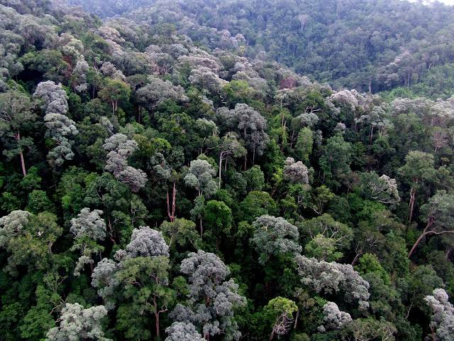
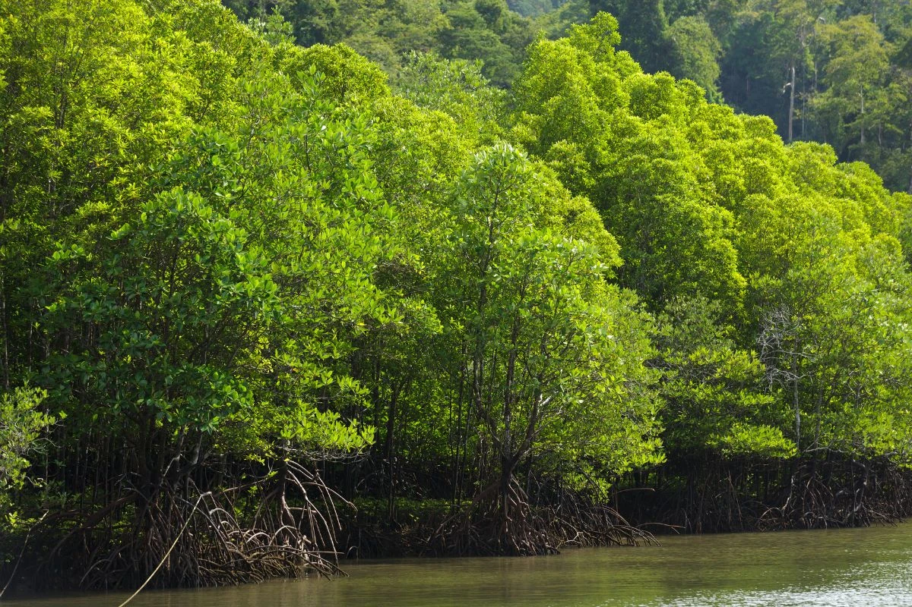
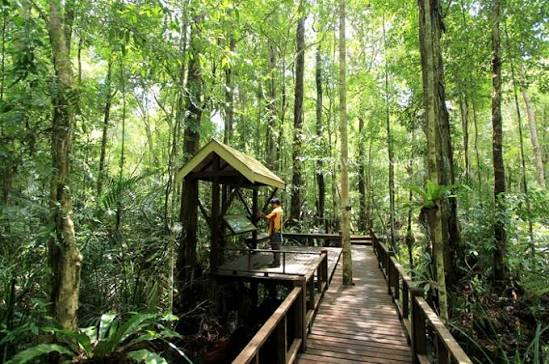

รายงานเชิงวิชาการ 6 พาร์ท — ความรู้พื้นฐาน รูปถ่ายป่าไม้ ข้อมูลสถิติ แผนที่จริง และแหล่งข้อมูลอ้างอิง
เริ่มจากภาพรวม — ป่าไม้คืออะไร ทำไมภาคใต้จึงสำคัญ และปัจจุบันเหลือป่าเท่าไร
ป่าไม้ ไม่ได้หมายถึงแค่ "ที่มีต้นไม้" แต่เป็นพื้นที่ที่พืชพรรณขึ้นปกคลุมหนาแน่นพอจนกลายเป็นระบบนิเวศที่ทำงานได้จริง โดยต้องเข้าเกณฑ์ 3 ข้อตามนิยามของหน่วยงาน
กรมป่าไม้สำรวจด้วย ภาพถ่ายดาวเทียมร่วมกับตรวจสอบภาคสนาม แล้วรายงานผลเป็นไร่และร้อยละต่อพื้นที่จังหวัด [1]
ป่าดิบชื้นบนเทือกเขาตะวันตกเป็นต้นกำเนิดลุ่มน้ำหลายสายที่หล่อเลี้ยงเกษตรกรรมของภาคใต้
ป่าดิบชื้นและป่าพรุกักคาร์บอนได้สูง — พรุมีชั้นซากพืชสะสมใต้ดินที่กักคาร์บอนระยะยาว
ป่าชายเลนลดแรงคลื่น ลดการกัดเซาะชายฝั่ง และเป็นแหล่งเพาะเลี้ยงสัตว์น้ำตามธรรมชาติ
ป่าดิบชื้น ชายเลน พรุ และดิบเขา เป็นที่อยู่อาศัยของพันธุ์พืช-สัตว์เฉพาะถิ่นจำนวนมาก
เปิดอ่านทีละกล่อง — ประเภทป่า วิธีการสำรวจด้วยดาวเทียม ภัยคุกคาม และแนวทางอนุรักษ์

📷 ภาพถ่าย
📷 ภาพถ่าย
📷 ภาพถ่ายงาน GIS กับ Remote Sensing ไม่ได้เดาตัวเลข แต่มาจากการประมวลผลภาพถ่ายดาวเทียมเป็นขั้นตอนที่ตรวจสอบได้
สรุปตัวเลขสำคัญ แผนภูมิรายจังหวัด ตารางสถิติ และแนวโน้มการเปลี่ยนแปลง 10 ปี
คลิกจังหวัดในรายการ → แผนที่จริงโหลดไปยังพิกัดจังหวัดนั้นพร้อมหมุดทันที (ไม่ต้องใช้ API Key)
maps.google.com/maps?q=lat,lng&output=embed ที่ไม่ต้องใช้คีย์ลิงก์แหล่งข้อมูลทางการสำหรับดึงสถิติป่าไม้ ภาพถ่ายดาวเทียม และช่องทางติดต่อหน่วยงาน
รายการอ้างอิงและข้อมูลผู้จัดทำโครงการ
นางสาวนาอีมะฮ์ โตะเย็ง
ผศ. วุฒิพงษ์ แสงมณี